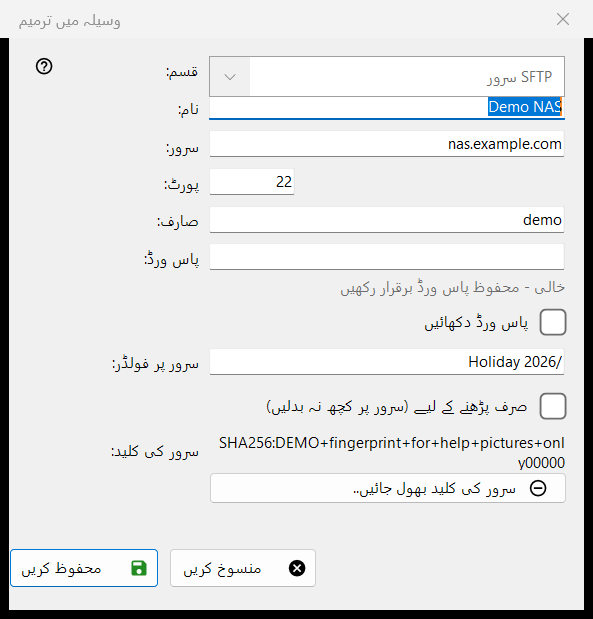
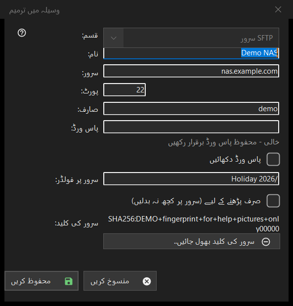

وسیلہ میں ترمیم
یہ کس مقصد کے لیے ہے
ایک محفوظ سرور یا نیٹ ورک فولڈر کا فارم۔ وسائل کی فہرست سے شامل کریں.. اسے خالی کھولتا ہے، عنوان نیا وسیلہ؛ ترمیم کریں.. اسے بھرا ہوا کھولتا ہے، عنوان وسیلہ میں ترمیم؛ اور فولڈر کے خانے میں لکھا sftp:// پتہ اسے پہلے سے بھر کر کھولتا ہے۔


اس ترتیب میں
- قسم منتخب کریں: SFTP سرور یا نیٹ ورک فولڈر (SMB)۔
- وسیلے کا نام دیں اور سرور کا پتہ اور پورٹ، یا نیٹ ورک کا راستہ لکھیں۔
- صارف کا نام اور پاس ورڈ لکھیں۔
- سرور پر فولڈر طے کریں، اور اگر وہاں کچھ بدلنا نہ ہو تو صرف پڑھنے کے لیے کا آپشن منتخب کریں۔
- محفوظ کریں دبائیں۔
عناصر
قسم
قسم کا خانہ وسیلہ بناتے وقت منتخب ہوتا ہے: SFTP سرور (پورٹ 22، فولڈر /) یا نیٹ ورک فولڈر (SMB)۔ محفوظ شدہ وسیلے کے لیے فہرست غیر فعال رہتی ہے، کیونکہ محفوظ پاس ورڈ اور سرور کی کلید صرف ایک ہی قسم کی ہوتی ہے۔ SMB کے لیے پتے کے خانے کا نام نیٹ ورک فولڈر ہے اور وہ \\server\folder جیسا راستہ لیتا ہے؛ پورٹ اور فولڈر کے خانے صرف SFTP کے لیے ہیں۔
نام، سرور اور پورٹ
نام کا متن فہرست میں دکھایا جاتا ہے؛ خالی ہو تو سرور کا پتہ استعمال ہوتا ہے۔ سرور کے خانے میں نام یا IP پتہ ہوتا ہے اور پورٹ کے خانے میں 1 سے 65535 کے درمیان ایک عدد۔ سرور یا پورٹ بدلنے پر درآمد شدہ وسیلے کے ساتھ آنے والے دوسرے پتے ہٹا دیے جاتے ہیں، تاکہ محفوظ پاس ورڈ کبھی ایسے پتے پر نہ جائے جو آپ نے نہیں لکھا۔
صارف اور پاس ورڈ
صارف اور پاس ورڈ کے خانے۔ پاس ورڈ آپ کے Windows اکاونٹ کے لیے انکرپٹ کر کے رکھا جاتا ہے؛ فہرست میں صرف اس کا حوالہ ہوتا ہے۔ محفوظ شدہ وسیلے کے لیے خانہ خالی رہتا ہے اور اشارہ یہ دکھاتا ہے: خالی - محفوظ پاس ورڈ برقرار رکھیں۔ اسے بدلنا ہو تو ہی کچھ لکھیں۔ پاس ورڈ دکھائیں آپشن شروع میں بند ہوتا ہے۔ نئے وسیلے کے لیے پاس ورڈ ضروری ہے۔
فولڈر اور صرف پڑھنے کے لیے
سرور پر فولڈر وہ فولڈر ہے جسے ویوئر پہلے کھولتا ہے، یعنی / سے شروع ہونے والا راستہ۔ صرف پڑھنے کے لیے (سرور پر کچھ نہ بدلیں) آپشن ویوئر سے کہتا ہے کہ وسیلے کو صرف پڑھنے والا سمجھے: اس میں کچھ منتقل یا کاپی نہیں کیا جا سکتا، اور نہ اس میں کچھ حذف کیا جا سکتا ہے نہ اس کا نام بدلا جا سکتا ہے۔
سرور کی کلید
سرور کی کلید کا خانہ اس سرور کے لیے یاد رکھا گیا فنگر پرنٹ دکھاتا ہے، یا بتاتا ہے کہ وہ پہلے کنکشن پر نظر آئے گا، جہاں آپ اس کی تصدیق کرتے ہیں۔ سرور کی کلید بھول جائیں.. بٹن صرف تب نظر آتا ہے جب کوئی کلید یاد رکھی گئی ہو۔ یہ پہلے پوچھتا ہے (ڈیفالٹ جواب نہیں) اور وضاحت کرتا ہے: اگر سرور نئے سرے سے انسٹال ہوا ہو تو یہ معمول کی بات ہے، ورنہ کوئی اس کی نقالی کر سکتا ہے۔ یہ صرف کلید مٹاتا ہے: اگلے کنکشن پر نیا فنگر پرنٹ دکھایا جائے گا اور دوبارہ پوچھا جائے گا۔
محفوظ کریں
محفوظ کریں خانوں کی جانچ کرتا ہے اور ان کے نیچے سرخ رنگ میں پہلے مسئلے کا نام بتاتا ہے: پتہ، پورٹ، فولڈر، صارف کا نام یا نہ دیا گیا پاس ورڈ۔ منسوخ کوئی تبدیلی کیے بغیر فارم بند کر دیتا ہے۔